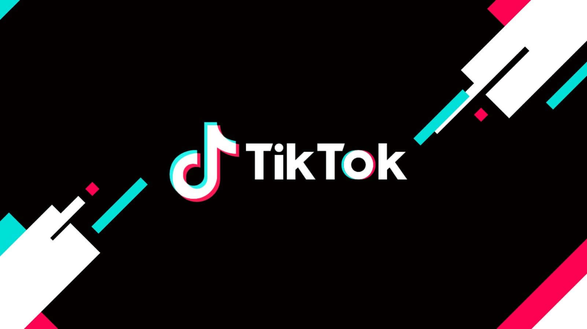
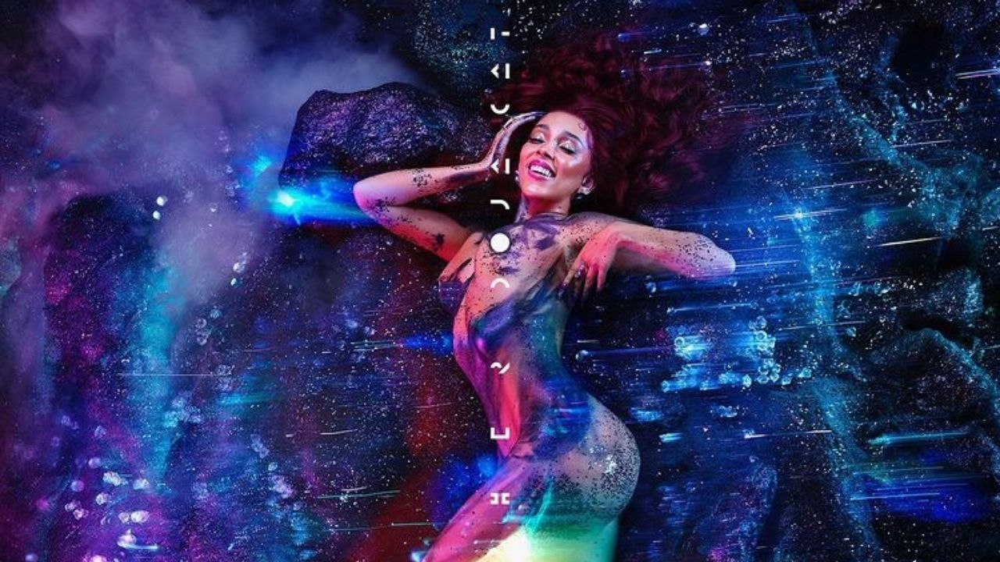
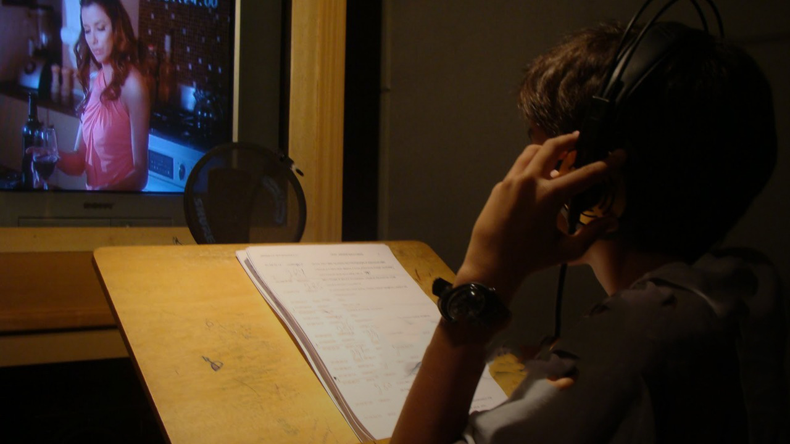

O desenvolvimento da Arte
Tiktok Na Pandemia
O tiktok teve um crescimento muito grande desde o começo da pandemia, por ser uma rede social focada em vídeos com música ele de maneira indireta afeta os ramos mais comuns da cultura.
Todas as músicas, séries e filmes mais alavancados do momento tiveram em comum essa rede social, as vezes nem sendo os produtores que criaram o conteúdo mas sim a comunidade indo repassando entre si.
Música na pandemia
A forma em que a música foi afetada nessa pandemia não foi tão direta quanto os outros focos, por sempre ter tido uma abertura e popularidade maior dentre todos os públicos, porém mesmo assim é perceptivel quue algumas coisas mudaram, por exemplo a prória forma visibilidade de artistas, hoje é muito mais fácil conhecer artistas novos por conta das redes socias do que antigamente.
Dublagem na Pandemia
Diego Lima, ator e diretor de dublagem conhecido pela elogiada localização de One Punch Man, para a Netflix. sore a dulagem: “Logo em março uma empresa já freou os trabalhos presenciais, sem nenhum tipo de plano B pois era um mundo novo para todos. Aí as outras empresas também adotaram isso em um efeito dominó, e a dublagem – não só no Brasil, mas no mundo – parou”,
É impossivel dizer que saimos ilesos dessa pandemia mas ter contúdos ricos e confortantes ao nosso redor
deixou essa loucura um pouco mais suportável.
A forma em que daca pessoa lidou com a pandemia é, com certeza, individual mas todos nos conseguimos
lembrar de uma música, série ou jogo que, por alguns segundos nos fez esquecer o caos que o mundo está.
É importante sempre reconhecer nossas diferenças, mas alguma forma de arte sempre agradará cada indivuo
no mundo.